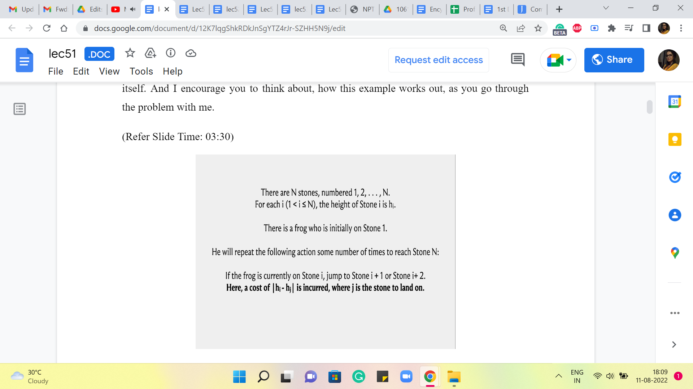
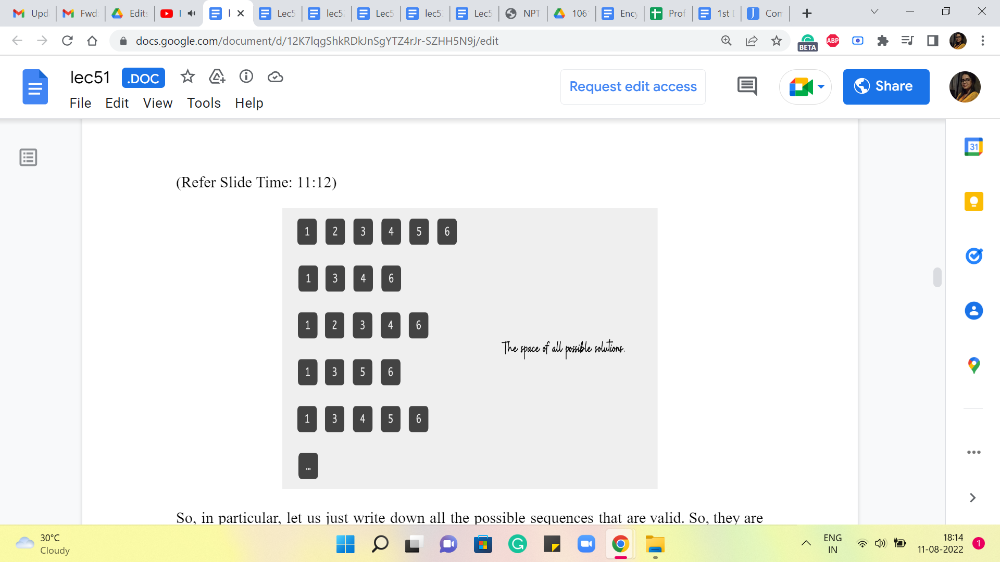
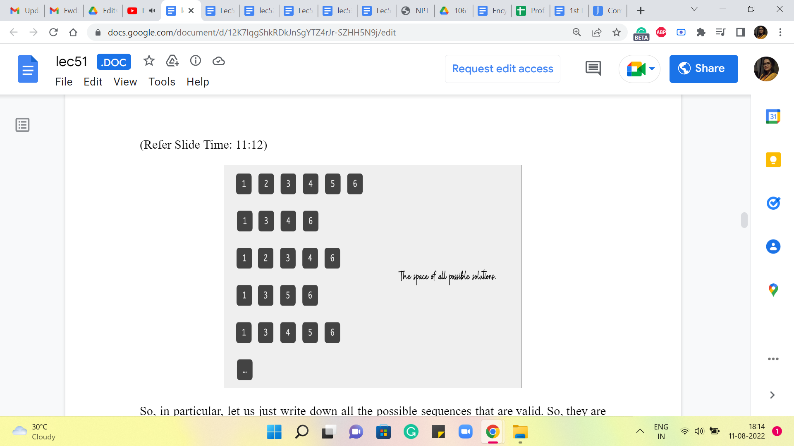
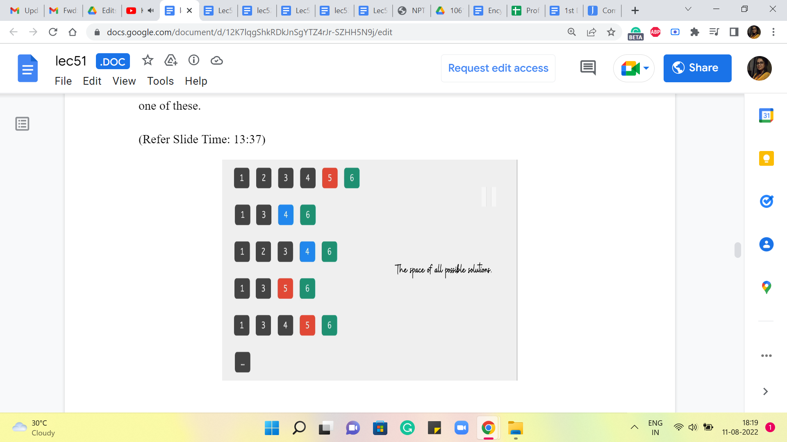
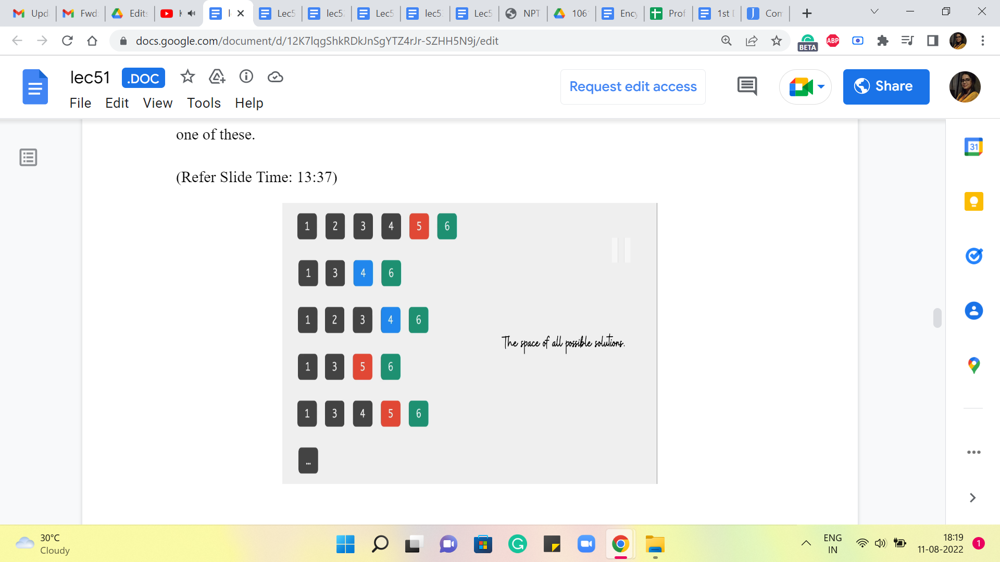
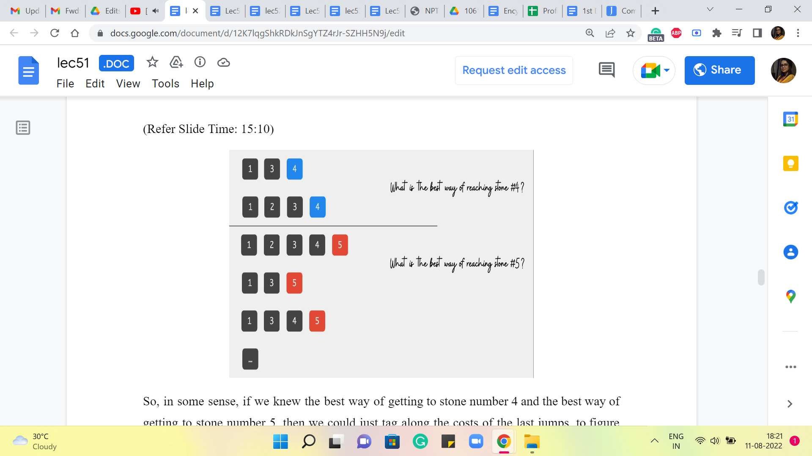
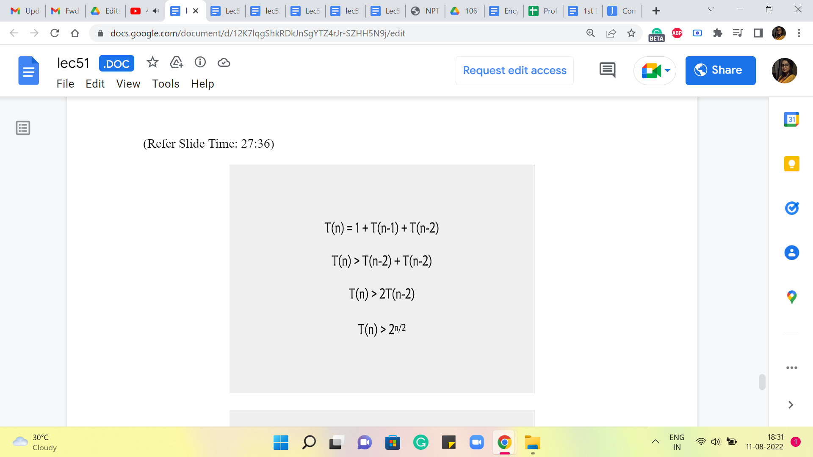

Memoization | Frogs 1 (AtCoder Educational DP Contest)
Lecture - 51
Memoization | Frogs 1 (AtCoder Educational DP Contest)
(Refer Slide Time: 02:55)

Hello and welcome to the first module in the 10th week of Getting Started with Competitive Programming. With the 10th week, we are starting a new theme in the course and this is going to be Dynamic Programming. It is a theme that we will continue to explore all the way till the end of the course, which is to say up to week 12.
As you probably know already, dynamic programming is a ubiquitous technique that is extremely popular in competitive programming. Almost every contest has at least one problem that involves dynamic programming, either exclusively or in conjunction with other techniques. So, we are going to take our time and go over several examples with different flavors.
In this introductory module, I will try to explain the main ideas involved in dynamic programming and we will look at what is usually referred to as the top-down approach or memoization. In the second module this week, we will look at the so-called bottom-up or tables-based approach to dynamic programming. Once you are done watching both of these modules, you should be well prepared to solve basic dynamic programming-based problems. And the good thing is that there are tons of examples out there for practice.
In fact, the two problems that we will use as examples are from two problem sets that are really nice to start with. So, the first one is from an AtCoder Educational Contest on Dynamic Programming. It had 26 problems, coded a, b, c through z, one for each letter of the alphabet, and I think, sorted roughly in increasing order of difficulty.
There is a lot of material around this problem set; you can find, I think, blogs on Code Forces that try to explain some of these problems. But at least the initial ones are quite doable, based on what you will see in these lectures. So, I would definitely recommend that you try going out there and solving some of them on your own, even without having to look at the editorials.
In the next module, we will tackle a problem from the CSES dynamic programming problem set. That is a slightly smaller collection of 19 problems, again progressing in increasing order of difficulty. But once you are done with this, you should definitely be able to tackle the first few problems in that problem set. Again, it is very easy to set up an account on CSES. If you have not already done that before, for some of our previous problems, I think this would be a good time to do it. And try to roll up your sleeves and get some practice with dynamic programming, at least the elementary problems.
So, with all that said, let us get started with our first problem for this week. And this one is called Frogs. It is called Frogs 1 actually, I think, because there are three problems with the same premise, the same setup, but slightly different questions, in terms of, what is going on. So, there are Frogs 2 and Frogs 3 at different parts of the problem set, so you might want to go and check that out after you are done with this.
But for now, let me tell you about Frogs 1. As usual, we are going to start with a problem statement. This time I will interweave an example as we go through the problem statement itself. And I encourage you to think about, how this example works out, as you go through the problem with me.
(Refer Slide Time: 03:30)
 
So, to begin with, there are N stones, numbered 1 to N, and for each ‘i,’ from 1 to N, we are given the height of stone number i. So, I am going to visualize this, literally with comical-looking stones here. And the numbers that you see at the bottom of your screen are actually the heights of these stone piles. The pictures are not necessarily to scale. And these numbers are taken from the last sample input. Okay. So, we have N stones, left to right, think of them as stones 1, 2, 3, all the way up to N. In this case, as you can see, N is 6. And this will be a running example as we go along.
Now, there is a frog who is initially on stone one. So, introducing the frog. I should have probably picked up a side profile because the frog is going to jump around. So, this is not very realistic. But that is okay. I think it is nice to be able to see the smiling face of the frog as we try to solve this problem. So, that was the rationale.
Now, our friend, the frog, will repeat the following action, some number of times, to reach stone N. Remember, he starts from 1 and he is trying to get to the last stone in the series. The first thing that he can do, is that, if he is on stone number ‘i’ currently, he can jump to either stone number ‘i’ + 1 or stone number i + 2. So, let us look at the frog in action.
So, right now, the frog is in stone number 1, and from here, he could go to stone number 2, or he could go to stone number 3. Okay. So, both of these stones are accessible to the frog, sitting at stone number 1. But he cannot go in one step. He cannot go to say stone number 4 or any of the later ones. The only way to get there would be via an intermediate jump first. Okay. So, whenever the frog does jump between two stones, he incurs a cost, and the cost is proportional to the difference between the heights of those stones. And we are looking at the absolute difference here. Okay. So, let us again take a look at a couple of jumps and see how that works.
So, here, for instance, the frog is on the third stone and he jumps to the fifth one. And notice that the fifth stone and the third stone have the same height. So, this was smooth sailing – apparently, no jumping involved! So, a cost of 0 was incurred in this particular jump. On the other hand, compare this with a jump from stone number 3 to stone number 4. That is a more steep sort of exercise, and the difference between the heights of these 2 stones is 60-10, 50. The absolute difference is 50. And the cost, therefore, is also 50. So, now that we understand how the individual jumps work in terms of their costs. It is time to take a look at, what our task is going to be.
(Refer Slide Time: 06:22)

It is actually quite predictable, you might have guessed that what we want to figure out is, what is the best way of jumping around that takes the frog from stone 1 to stone N? And by the best way, we simply mean the way that involves the least cost. And the least total cost, in particular, is going to simply be the costs of all of these individual jumps added up.
So, you want the cheapest route from 1 to N, except this is not to be confused with say shortest paths and graphs. There is not really a graph structure underlying this problem here. At least not a very natural one. We just want to figure out, what is the best sequence of jumps that lands the frog at stone number N.
So, now that is the entire problem statement and I would say that this is a good place to pause and think about, how you would come up with a solution to this problem. Now, if you are already quite familiar with dynamic programming or recursion as a technique, then you might find the solution pretty easily. It is reasonably predictable.
On the other hand, if you are not so familiar with these techniques, then you might treat this as a good warm-up exercise. And finally, if you have never seen dynamic programming, explicitly before, and you are not all that familiar with using recursion, then you might want to think about, what would be a way to solve this problem that does not really involve the use of any of these techniques, but perhaps uses other techniques that you know.
For example, would a greedy strategy work? A natural greedy strategy may be to just take the better of the two jumps that are ahead of you. So, wherever you are, there are two possibilities, one of them is going to be cheaper and if not, then you could just break ties arbitrarily. That is a complete algorithm on its own. You could think about whether that would actually work.
You could think about what would happen if you tried to come up with a Brute-Force Solution. So, let us say you explored both pathways, and for each of those pathways, you explored both of the options that would await you. If you took either of them and so on and so forth. And what would be the sort of the expense of computing a solution in this way and so on? So, I think there is enough food for thought here for everybody, no matter where you are on the spectrum of pre-existing familiarity with DP or recursion.
So, give it a thought and come back once you have done that. Alright. So, it turns out that if you followed a greedy approach, then that would actually not work, and I would encourage you to come up with explicit examples demonstrating that it would not work. On the other hand, if you try to Brute-Force a solution by, say, enumerating all possible sequences that the frog could take then you will find that just the sheer number of sequences that you have to consider is exponential or it at least turns out to be exponential. And for this problem that is not going to be feasible, because if you look at the constraints, N can be as large as 10 to (the) 5. So, that is simply not going to work.
Now, having said that do not completely trash the Brute-Force approach just yet. Do keep it at the back of your mind for comparison with what we are about to do. In fact, you might find that what we actually end up doing looks suspiciously like a Brute-Force approach. And hopefully, with that, you will be able to appreciate why what we do actually ends up improving on the Brute-Force approach, by somehow coming up with a way to cleverly cut through, what is otherwise a very very large search space. Okay. So, let us think about how we can manage this really large set of possibilities that we actually have to consider which are all possible valid sequences of jumps, from stone number 1 all the way to stone number N.
(Refer Slide Time: 10:15 and 11:12)
 

So, we do know that when the frog is done jumping around at the very end, he ends up at the last stone. So, one thing that we are going to do is, really try to see, if we can play this process back in reverse that is something that is going to be a part of the way we think about this. So, instead of thinking about, what is the next jump from stone number 1, we are going to say, suppose, there is an optimal sequence, of course, there is some optimal sequence, it is well defined.
In that optimal sequence and if there are multiple optimal sequences, you could just fix any one of them, it can be arbitrary as long as it is fixed. And in that optimal sequence, you want to ask yourself, well, how did the frog get to the N’th stone in this particular sequence? What was the penultimate step? And then we will try to take it from there. That will help us come up with an appropriate recursive formulation.
So, in particular, let us just write down all the possible sequences that are valid. So, they are not all in here. So, this is just sort of a partial list, because of lack of space and also as I was saying earlier, this does look like, we are considering the whole space of valid sequences. So, this might remind you of the Brute-Force approach that we were talking about earlier.
But do not worry about it so much, I want to show you this just to talk about how you come up with the idea for a recursive algorithm. We would not actually be going through this list when we come up with the algorithm. So, this is more for just getting used to what is going on. So, hypothetically, this is the space of all possible solutions, and I want to make a couple of observations about this collection of sequences.
(Refer Slide Time: 12:11)


The first observation, which was implicit and what we just said earlier, is that all of these sequences end at 6 in our example, and more generally, they would always end at N. That is just a feature of every solution by definition. All of these sequences end at the last stone. What can we say about the second last element of these sequences? Ignore pathological cases like when N = 1. In fact, I think, it is promised in the problem constraints that N is at least 2.
So, you do not have to worry about the case when N = 1. It is ok for me to talk about the second last element in any of these solution sequences. Is there something that you notice about the second last element? Especially given the rules of the game. Remember that when jumping ahead, a frog can only jump to the next stone or the next-to-next stone. So, when he lands at stone number N, where could he have come from?
(Refer Slide Time: 13:16, 13:37 and 13:52)
 


You just need to turn this around a bit to realize that the second last element is always going to be either N-1 or N-2. Okay. So, in the optimal sequence, we do not know which one of these two it is. That is the million-dollar question. If we knew how to figure that out, then we could just work our way backwards all the way up to stone number 1. So, it could be either of these, but it is always one of these.
So, if you look at the second last element in these sequences, then it is always 5 or 4 in the context of our example. So, what I am going to do now is basically partition this space of valid solutions into two buckets. The first bucket consists of all the sequences that have 4 as the penultimate number. And the second bucket has all those sequences that have 5 as the penultimate number. Okay. So, more generally, you want to divide up your search space into 2 collections. In the first collection, you look at all those sequences where the last hop happened from stone number N-2. So, it was a skip over stone number N-1 to get to the last stone.
And in the other bucket, you collect all of those sequences, where the last hop was a direct hop from stone number N-1 to stone number N. Okay. So, why are we doing this? Well, recall that our task here is to figure out the sequence that has the best or the smallest cost. So, you can imagine that each of these sequences here is tagged with a cost, which is simply the sum of the costs of all the individual jumps that happen in the sequence that you are considering. Now, by breaking it up in this way, you might see that the cost of every sequence can be thought of as the cost of getting to either stone number 4 or 5, as the case may be, plus the cost of that last jump.
(Refer Slide Time: 15:10 and 15:27)
 
So, in some sense, if we knew the best way of getting to stone number 4 and the best way of getting to stone number 5, then we could just tag along the costs of the last jumps to figure out the sequence that has the best overall cost.
In other words, let us say that we knew, somehow magically, that the cheapest way of arriving at stone number 4 has a cost of Y and the cheapest way of arriving at stone number 5 has a cost of X, then notice that the final answer really boils down to a comparison between, at least in this example, Y + 40 versus X + 10.
(Refer Slide Time: 15:52)

More generally, it is going to be the cost of going from stone number N-1 to N, added to the best way of getting to stone number N-1 itself, versus the cost of going from stone number N-2 to N, added to the cost of the best way of getting to stone number N-2. Essentially, these are your two best options, and the final answer is going to be the better of these two. If there is a tie, then you can break it arbitrarily.
You can take a moment here to convince yourself of the correctness of the claim that we are making here, that this is indeed the answer. It really follows from the exhaustiveness of our approach. Consider any sequence that claims to be an optimal sequence. Look at the last step that is being made in that sequence. It is going to be either N-1 to N, or it is going to be N-2 to N.
So, that is a fixed cost that the sequence has to pay, and beyond that, well, your optimal sequence has to get this turn number N-1 or N-2, as the case may be. And on that front, it cannot really hope to beat the answer of N-1 or the answer of N-2 because these quantities, by definition, are the optimal costs for reaching stones N-1 or N-2, as the case may be. So, hopefully, this sequence of arguments convinces you that this setup that we have here does lead you to the right answer. So, this equation is what we want to compute.
Now, notice that to compute A and B, we have really two components to worry about. The second term in the sum, which is the cost of going from N-1 to N or N-2 to N, is simply given to us in the input. So, we just pull out the heights of these stones and or take the difference. So, that is straightforward. Now, other than this, we also have the answer of N-1 and the answer of N-2 as terms that we need to compute. And that is something that we are going to compute by magic.
We are just going to ship this off to the recursion fairy, which essentially means that the way we will compute the answer of N-1 and the answer of N-2 is exactly the same as the way that we are currently trying to compute answer of N. So, when we want to compute the answer of N-1, we basically pretend that the whole universe, the whole instance that we are dealing with, is now restricted to stones 1 through N-1 only. And then we just solve that on its own. And when we are done, we come back to the current world, which is the world with N stones, and we piece everything together.
(Refer Slide Time: 18:41)

So, if you were to translate this to code, it would look something like this. You want to write this inside a function so that it can call itself. And this is essentially the recurrence that we had on the previous slide a few moments ago. Now, if you stare at this for a while, you might realize that something is missing. If you were to actually write this program and implement it, which you are welcome to try, you might find that the program does not really stop. And the reason for that is that we have not really given it a stop signal.
And notice that this is not because we have a bug in the code or something. We have implemented our idea exactly as we had written it down earlier. So, in fact, if you go back to the recurrence that we had and let us say, you try to execute it just on pen and paper, you will have the same experience. You will just keep going because the recurrence does not really tell you, where to stop.
So, let us say that you start off with trying to figure out the answer for the 6 tones that we had earlier, and you start by computing ‘A,’ that is going to be an answer of 6-1, 5. That is just the first thing that you need to worry about. So, let us say that you try to unravel that you will get to answer of 4 and then 3, 2, 1, 0 and then -1 and -2 and so on, which is super weird. So, in particular, notice that asking for the answer when N = -1 does not even make sense as a question.
What do we mean by there are ‘-1’ stones? We do not even have the data for that kind of situation. So, that is a hint that that is a place that we should not go to. It is a dangerous place. And we do not want our algorithm to ever have to worry about this. So, when do we get into situations where we may start asking these questions that do not make sense? So, let us think about what happens when N = 1, for example.
So, if N = 1 and we try to apply this algorithm, then we will have to worry about the answer of 0 and the answer of -1. And in some sense, both of these questions do not really correspond to scenarios that exist in the context of our problem. We know that we are looking at, at least one stone to begin with for the frog to be on. So, these are unreal scenarios, and that is why we do not really want to get into them. So, N = 1 is something that we want to be able to address without getting into recursion. Similarly, for N = 2, you are thinking about the answer of 1, which is kind of.
But we also have again answer of 0, which corresponds to again imaginary world; it does not really correspond to a well-defined problem scenario. So, also, for N = 2, I want to avoid using the recursive method to compute the answer. So, if you are not going to use the recursive method, then how are we going to calculate the answers? Well, the answers can be calculated by hand for these scenarios. Because notice that when you just have 1 or 2 stones, then it is really easy to figure out what to do.
(Refer Slide Time: 21:42 and 23:28)


In particular, if you have just one stone then there is nothing to be done. The first and the last stone are the same. So, there is no cost involved in getting from the beginning to the end. So, the answer, in this case, is 0. On the other hand, if you have two stones then there is really no choice; you only have one thing that you can do. So, the answer is going to be the difference between the heights of the first stone and the second stone, the absolute difference.
So, these are answers that we are going to compute in some sense by hand and this is what will cut off the recursion and will make sure that the overall algorithm actually terminates and returns a meaningful answer. Of course, you could compute, for instance, the answer of 3 by hand as well, or the answer of 4 by hand, by doing some cases. But the point is that you do not really need to. These are the minimal base cases that make your algorithm work.
And although in some scenarios, it is useful to be clever about what kind of base cases you compute. For the most part, by and large, at least for elementary examples of dynamic programming, the base cases are usually very easy to figure out, but they are also very, very important. Okay.
So, just keep in mind that if you do not have a base case specified or you have it improperly specified, because, with some issue with indexing and things like that, this may be really a common source for bugs, certainly, if your program is timing out or it seems like it is taking forever, watch out for the base cases. And if your answers are off by just a little bit, just make sure that your indexing for the base cases has been done properly. Okay. So, let us go back and fix our code here.
So, this is the recursion with the base cases thrown in. And if you were to implement this and try it out, you will see that you do get the right answers. But you may find that it is still taking quite a bit of time. This is a really good place to pause and actually play around with this implementation. Try it with small and large examples on your computer and see how long it takes. If you feel like it, you could also try and upload this solution and see if you time out. Also, think about how would you analyze the running time of this algorithm? Right.
So, just what is your estimate for how long this takes? Think about all of this, and come back once you have had a chance to play around with this program a bit. All right. So, let me address the question of how long this program takes. The best way of analyzing a recursive program is through what is called a recursion tree.
(Refer Slide Time: 24:28)

So, let us just try to visualize, what these function calls are doing, by examining what happens if you start off by invoking it for the case of 6 stones like we have in the running example that we started off with. So, when you invoke the algorithm to try and figure out the answer for 6 stones, it is going to make these 2 function calls to understand the universe of what happens with 5 stones and 4 stones, respectively.
And, well, the first function call that gets executed is the one involving 5 stones. So, what is that going to do? Well, it is going to come back and try and understand what is going on for 4 stones and for 3, and once again, the first branch that gets executed is the one involving 4 stones.
So, that is going to degenerate further into 3 and 2, and for 3, you are again going to probe 2 and 1. And now there is going to be no further recursion because, as we have discussed earlier, 2 and 1 form the base cases, so you just go back up and report the answer to the computation for 3 stones. And similarly, 4 is done as well. And now we come back to 5, which on the right branch was also waiting for the answer for 3 stones.
So, that is once again going to probe 2 and 1. And now you walk your way back up to 5 and then 5 reports back to 6 and then 6 says okay. So, I understand what is going on when there are 5 stones. Now, let us go ahead and think about what happens when there are 4 stones, and that is going to lead to more recursive calls on 3 and 2. The call for 3 will again go further down and explore 2 and 1. And at this point, you are truly done. Because, well, at this point, all function calls have returned values, and you just have to do some computation to report the final answer at the very end.
So, what is the complexity of the algorithm? Well, it is proportional to all of these function calls that are happening here. The number of function calls that you see on your screen, and of course, there is a multiplier for the amount of work that you do at each function call. So, for instance, let us say you were at the node labeled 5, then you were, of course, waiting for the function calls to 4 and 3 to return values. And after that, you still have a little bit of extra computation to do. So, you have some differences in heights to compute, some addition, and taking a minimum.
But all of this is essentially constant time. So, the overall running time can really be thought of as being proportional to the size of this recursion tree. So, how many nodes are there in this recursion tree? So, given that the definition of this tree is really driven by a recursive function. It is natural that an expression that determines the number of nodes in this tree is also given recursively. So, if we were to use T of n to denote the number of nodes in the recursion tree for the algorithm when invoked with input n, then we get this expression for T of n.
(Refer Slide Time: 27:36)
 
There is the root node itself, and then there are these 2 function calls to n-1 and n-2, resulting in recursion trees with T of n-1 and T of n-2 nodes, respectively. Okay. So, this is a valid expression for counting the number of nodes in the recursion tree for the algorithm when called with input n. And of course, just like the recursive algorithm, even this expression could use a base case. For it to be well defined, I am not making it explicit here, but you can probably check that T of 1 and T of 2 are both 1, and that will make this function description complete.
Now, what I want to do here is just get a sense of how fast or slow growing this function is in terms of ‘n?’ The recurrence itself may strike you as a familiar one. It does look a lot like the Fibonacci recurrence, something that has come up before in this course as well. But instead of looking at an exact closed form for this recurrence, I will just try to do a quick and dirty lower bound.
So, notice that T of n is going to be strictly greater than T of n-2 + T of n-2. So, I am discarding the 1. And notice that I can claim that T of n-1 is at least T of n-2 because even by definition, T of n-1 is T of n-2 + something. Right. So, we have this simplified expression on the right-hand side, which works out to T of n being strictly more than 2 * T of n-2. And if you were to unravel this further, you will see that you just end up collecting two’s until you hit something like n = 0.
So, you could take a moment here to think about how many two’s you will accumulate by the time you hit the base case, which is when n is 0. So, let us say you start with, for example, n = 20. Then basically, the steps here would be from 20 to 18 to 16 to 14, and so on. So, you can see that you need n over 2 steps to go from the current value of n all the way down to zero. So, the number of two’s you accumulate is roughly something like n over 2. Okay.
So, I am being a little sloppy here in terms of not worrying about whether n is odd or even, etc. This is just to give you a rough sense of how big T of n is. And hopefully, this sort of back-of-the-envelope rough calculation tells you that T of n is definitely looking pretty scary right now. It is kind of exponential, which is not a good look. It is definitely not going to be feasible for the problem that we are trying to solve.
And so, I would like to take you back to the recursion tree here. And I am going to request you to spend some time staring at this and see what is really going on here. And is there something that we can do to fix the situation that we have landed ourselves in? Incidentally, notice that this recursive tree actually has a leaf corresponding to every possible sequence that the frog could take in going from 1 to n. In that sense, we have really here a visual representation of the entire search space.
This is why I said that what we are going to do is going to begin by looking like the Brute-Force solution that we started with and immediately discard it for being too expensive. So, it would be completely understandable if you feel a bit cheated at this point, like I strung you along for the last several minutes, only to bring you back to square one.
But I promise you, there is light at the end of this tunnel, and in particular, there are going to be just a couple of lines of code that are going to fix this whole situation for you. So, with a minor but very important change, you can essentially turn this dramatically exponential time algorithm into one that is just linear time.
And the way we are going to do this is by making an observation about how the recursive process here is doing a lot of redundant work. So, I am actually going to stop here, and I encourage you to actually pause the video on the screen and try to look for the redundancy that I was referring to and see if you can figure out this time-saving strategy for yourself before you continue the discussion with me into the next segment.
So, I am sorry to be leaving you with a bit of a cliffhanger here. But especially if you are encountering memoization for the first time, I think it would be really worth your while to take a few moments and reflect on what could possibly be the time-saving strategy that we are going to employ when we come back in the next segment. And I will see you there. Thanks!